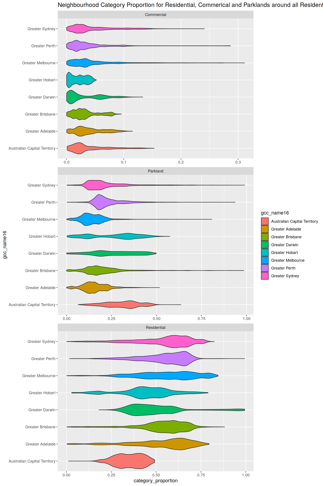
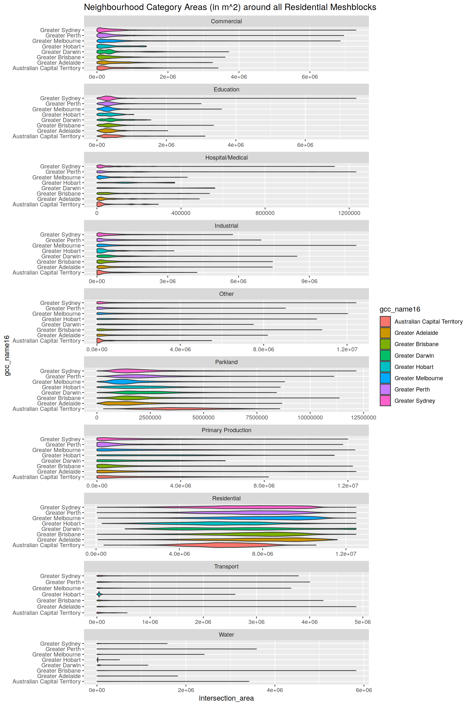
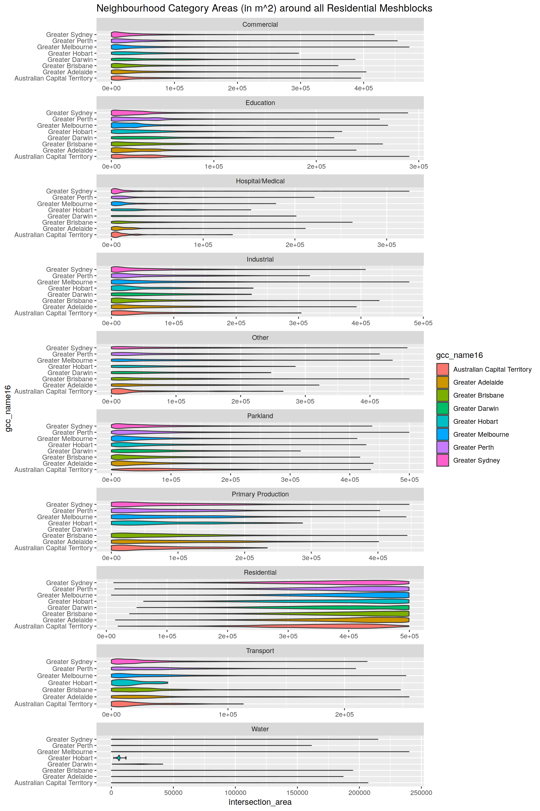
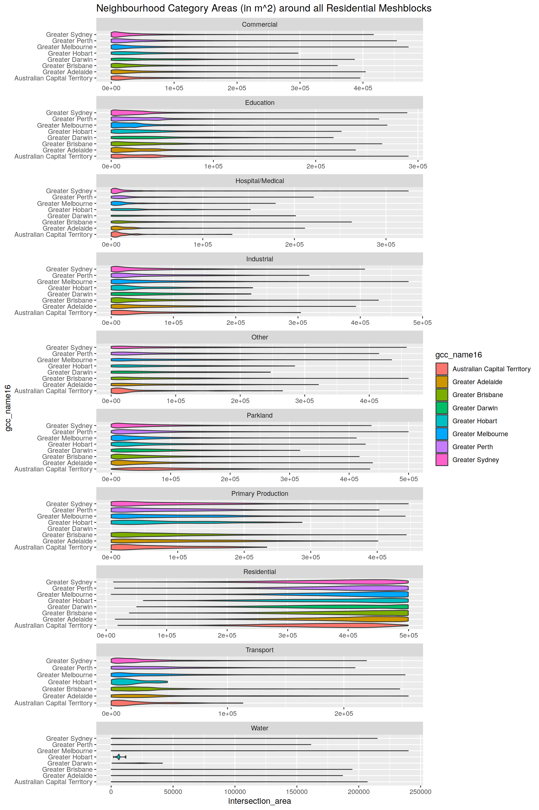

Home
Graphs
# Graphs for 5000 M buffer# Graphs for 2000 M buffer# Graphs for 1000 M buffer # Graphs for 400 M buffer
# Graphs for 400 M buffer
sessionInfo()R version 4.0.2 (2020-06-22)
Platform: x86_64-pc-linux-gnu (64-bit)
Running under: Ubuntu 20.04.1 LTS
Matrix products: default
BLAS: /usr/lib/x86_64-linux-gnu/blas/libblas.so.3.9.0
LAPACK: /usr/lib/x86_64-linux-gnu/lapack/liblapack.so.3.9.0
locale:
[1] LC_CTYPE=en_US.UTF-8 LC_NUMERIC=C
[3] LC_TIME=en_US.UTF-8 LC_COLLATE=en_US.UTF-8
[5] LC_MONETARY=en_US.UTF-8 LC_MESSAGES=en_US.UTF-8
[7] LC_PAPER=en_US.UTF-8 LC_NAME=C
[9] LC_ADDRESS=C LC_TELEPHONE=C
[11] LC_MEASUREMENT=en_US.UTF-8 LC_IDENTIFICATION=C
attached base packages:
[1] stats graphics grDevices utils datasets methods base
other attached packages:
[1] rvest_0.3.6 xml2_1.3.2 gt_0.2.2
[4] DT_0.15 leaflet_2.0.3 workflowr_1.6.2
[7] cleangeo_0.2-3 maptools_1.0-2 rgeos_0.5-5
[10] sp_1.4-2 geohash_0.4.0 multidplyr_0.0.0.9000
[13] osrm_3.3.3 RPostgreSQL_0.6-2 DBI_1.1.0
[16] furrr_0.1.0 future_1.18.0 fs_1.5.0
[19] readxl_1.3.1 s2_1.0.2.9000 sf_0.9-6
[22] janitor_2.0.1 rmarkdown_2.3 lubridate_1.7.9
[25] geosphere_1.5-10 forcats_0.5.0 stringr_1.4.0
[28] dplyr_1.0.2 purrr_0.3.4 readr_1.3.1
[31] tidyr_1.1.0 tibble_3.0.3 ggplot2_3.3.2
[34] tidyverse_1.3.0 drake_7.12.5 dotenv_1.0.2
[37] conflicted_1.0.4 nvimcom_0.9-102
loaded via a namespace (and not attached):
[1] colorspace_1.4-1 ellipsis_0.3.1 class_7.3-17 rprojroot_1.3-2
[5] snakecase_0.11.0 rstudioapi_0.11 farver_2.0.3 listenv_0.8.0
[9] fansi_0.4.1 codetools_0.2-16 knitr_1.30 jsonlite_1.7.1
[13] broom_0.7.0 dbplyr_1.4.4 Xmisc_0.2.1 compiler_4.0.2
[17] httr_1.4.2 backports_1.1.10 assertthat_0.2.1 cli_2.0.2
[21] later_1.1.0.1 htmltools_0.5.0 prettyunits_1.1.1 tools_4.0.2
[25] igraph_1.2.5 gtable_0.3.0 glue_1.4.2 wk_0.3.2
[29] Rcpp_1.0.5 cellranger_1.1.0 vctrs_0.3.4 crosstalk_1.1.0.1
[33] xfun_0.17 globals_0.12.5 lifecycle_0.2.0 scales_1.1.1
[37] hms_0.5.3 promises_1.1.1 parallel_4.0.2 yaml_2.2.1
[41] memoise_1.1.0 stringi_1.5.3 e1071_1.7-3 filelock_1.0.2
[45] storr_1.2.1 rlang_0.4.7 pkgconfig_2.0.3 evaluate_0.14
[49] lattice_0.20-41 labeling_0.3 htmlwidgets_1.5.1 tidyselect_1.1.0
[53] magrittr_1.5 R6_2.4.1 generics_0.0.2 base64url_1.4
[57] txtq_0.2.3 pillar_1.4.6 haven_2.3.1 foreign_0.8-79
[61] withr_2.3.0 units_0.6-7 modelr_0.1.8 crayon_1.3.4
[65] KernSmooth_2.23-17 progress_1.2.2 grid_4.0.2 blob_1.2.1
[69] git2r_0.27.1 reprex_0.3.0 digest_0.6.25 classInt_0.4-3
[73] httpuv_1.5.4 munsell_0.5.0